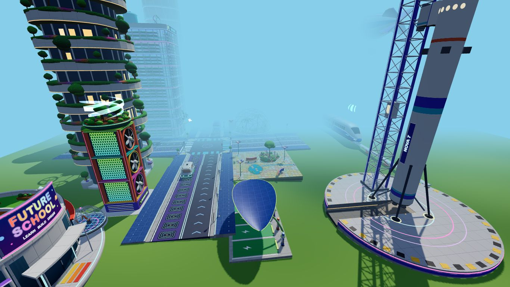
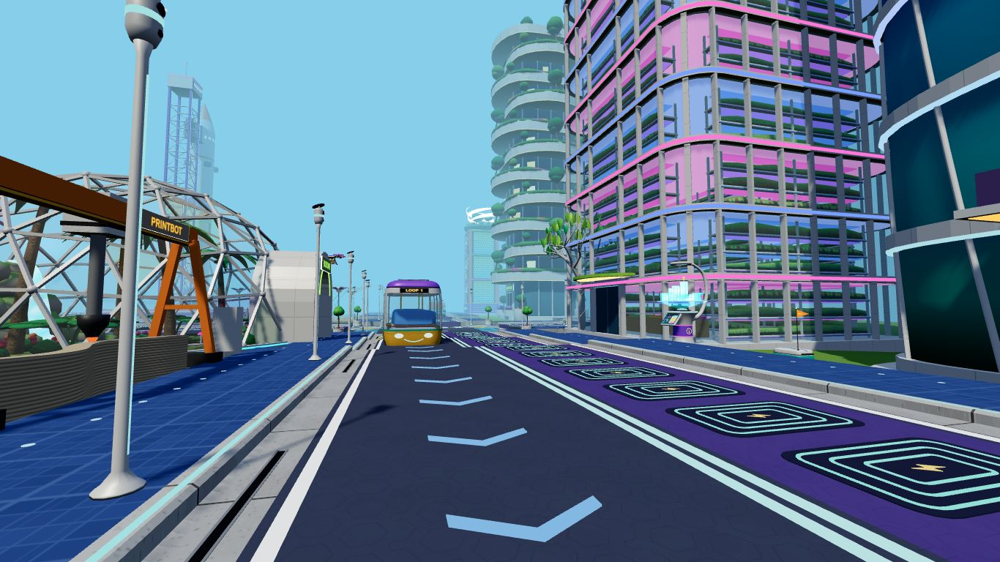
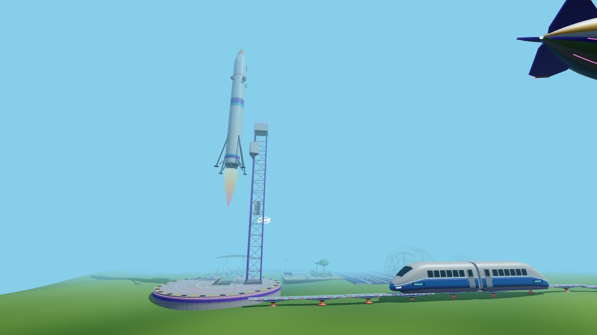

🚀 Build a Future City
30 life-size pieces for a city about a hundred years from now. Every one is imagined, and every one grows out of real technology being tested today. Build on the same grid as Build a City, so old streets and new ones join.
Getting there: open My World, an empty field made for building. Then tap ☰ Menu → Model Database → 🚀 Build a Future City, pick a piece and press Place. The address is edusim3dweb.com/app/?world=8. Opening a world link replaces the world you were in, so use Save World first if you want to keep it.
Moving a piece: click the orange 🔨 over it and choose Rotate/Move Shape. Drag the box to slide it, and drag a ring to turn it. Everything is real size, so stand on the smart road and walk into the biodome. You are 5 feet tall here.



The kit
Homes and towers
Community and power
Getting around

Streets and tracks
Clean air, water and light
Six activities
1. What will your city fix?
A city a hundred years from now will still need food, clean water, clean air, power and a way to get around. Choose three problems your city will solve. Read the cards of the pieces that solve them, then place one piece for each problem.
Think: every card says what is real today and what is imagined. Which of your pieces could be built soon, and which might take a hundred years? What would have to be invented first?
Teacher: the cards' facts are all about technology that exists or is being tested now: vertical farms, 3D-printed walls, maglev trains, delivery drones, direct air capture. The pieces themselves are imagined. Keeping those two apart is the lesson.
2. Feed everyone
Place a Vertical Farm Tower. Its card says each floor grows enough salad for about 50 people (a made-up figure for the activity). Then place a Rain Garden Plaza and a Biodome Garden.
Work it out: if your future city has 2,000 people, how many floors of farm do you need? How many towers is that? Where will the water for the plants come from when it rains, and where does it go?
Teacher: 2,000 ÷ 50 = 40 floors, which is four ten-floor towers.
3. Lay the fast lines
Place a Maglev Track and press its green ▶ once: three more 40-foot sections line up.
- repeat 3 times
- duplicate 40 ft away
Now place the Maglev Train, use Rotate/Move Shape to set it over the track, and press its ▶. It glides 80 feet and back.
- forever
- glide 80 feet over 4 seconds
- wait 2 seconds
- glide -80 feet over 4 seconds
- wait 2 seconds
Work it out: how long is your track? Change both 80s so the train uses all of it. A mile is 5,280 feet: how many sections would a mile of track need? A Hyperloop Tube joins a Hyperloop Station the same way.
Teacher: four sections are 160 feet, and a mile is 132 sections. The train is 80 feet long, so on 160 feet of track it can glide 80.
4. Launch day
Place the Spaceport Launch Pad and press its green ▶. The rocket launches and lands again. Open its Program: the rocket reads its own number.
- set height to 60
- forever
- wait 1 seconds
Try: change 60 to 120 and press ▶ again. Then place the Air Taxi and press its ▶: it climbs 30 feet, flies 60, lands, and comes back. Can you change its program so it lands on the roof of one of your buildings instead?
Teacher: the air taxi climbs with 60 steps of 0.5 feet. To land on a roof 40 feet up, climb more than 40 feet, fly over the roof, then come down by less than you went up.
5. Old streets, new streets
Place a Smart Road Section and, at its end, a Road Section from Build a City. They are the same 40 feet across, so they join. Put a Robo-Bus and a Self-Driving Pod on the smart road and press their arrows.
Think: which road would you rather walk along at night, and why? What would a city need to change to swap all its old roads for smart ones? Who pays, and how long might it take?
6. Welcome to 2126
Give the Hologram Info Kiosk a program that runs whenever your world opens:
- when this world opens
- say "Welcome to our city of the future!"
Finish: walk through your future city and tell someone its story: what problem each piece solves and which real invention it grew from. Then use Save World to keep it or send it to a friend.